Вся смена в четырёх главах
Мы пришли за программой. А нашли друг друга.
Сначала изучали карту, потом открывали секретные комнаты, писали песню, заводили книжный клуб и однажды поняли: лагерь уже живёт своей жизнью.
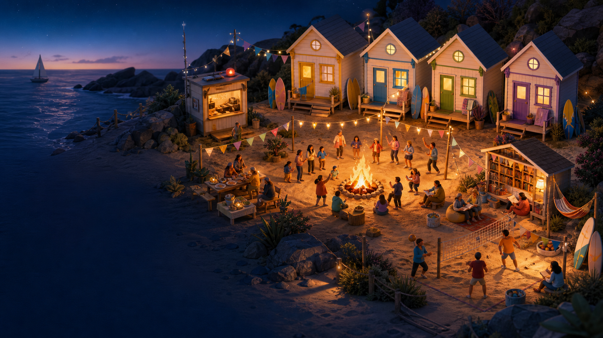
Тысячи сообщений и один онлайн-лагерь, который случился по-настоящему.
Открыть выпуск ↓Сначала изучали карту, потом открывали секретные комнаты, писали песню, заводили книжный клуб и однажды поняли: лагерь уже живёт своей жизнью.

Каждый день — новая точка, маленькое приключение и повод позаботиться о себе.
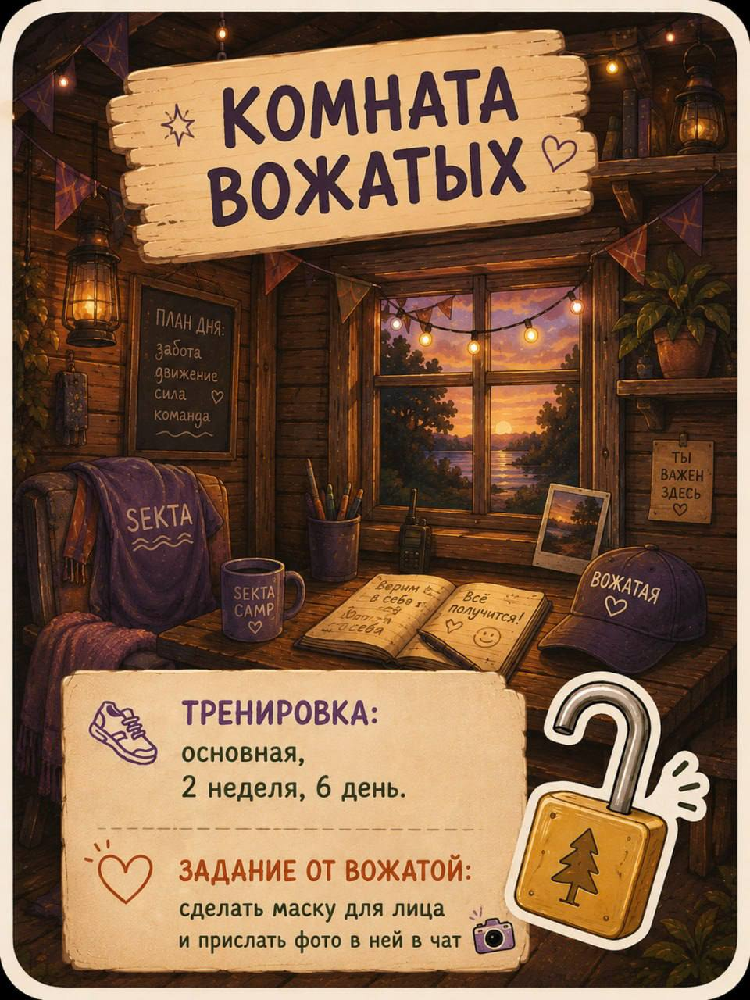
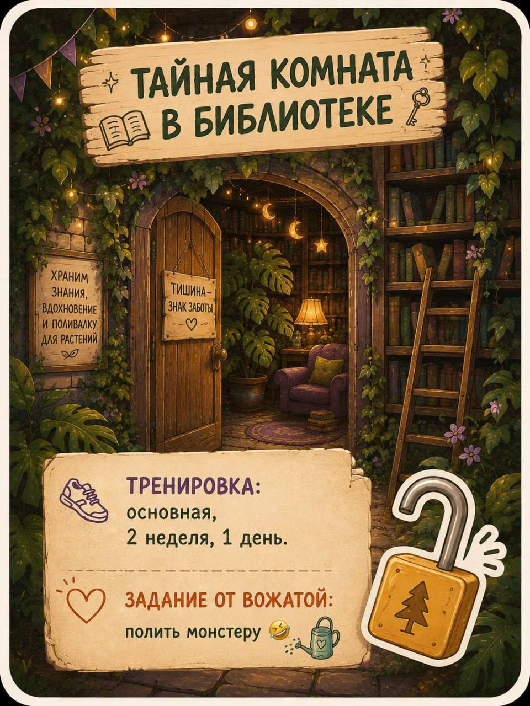
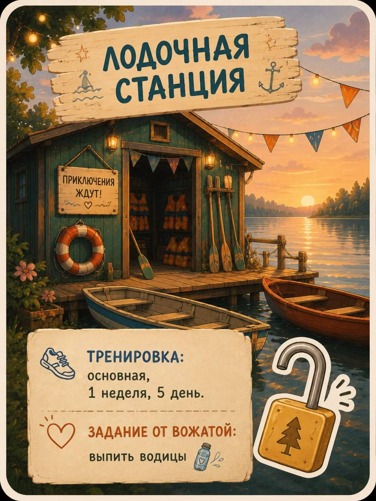
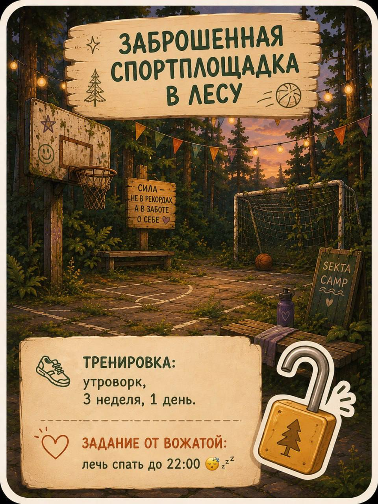
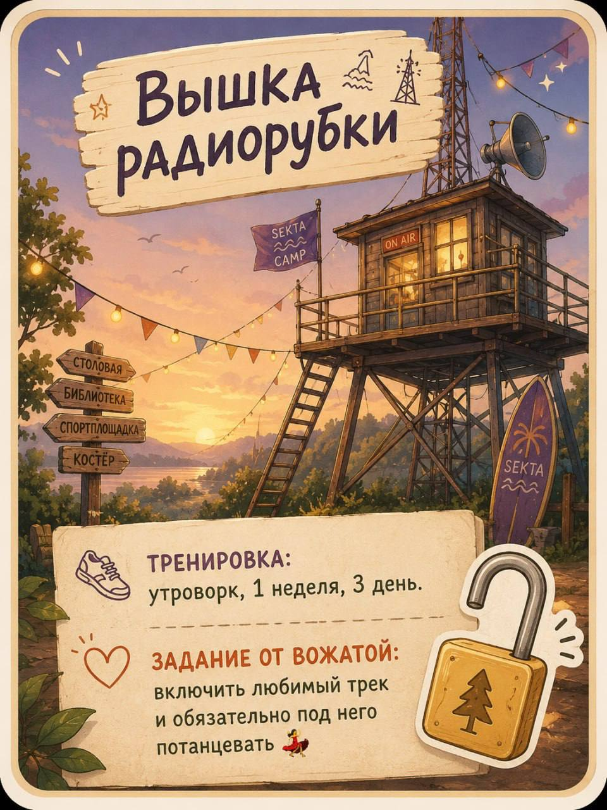
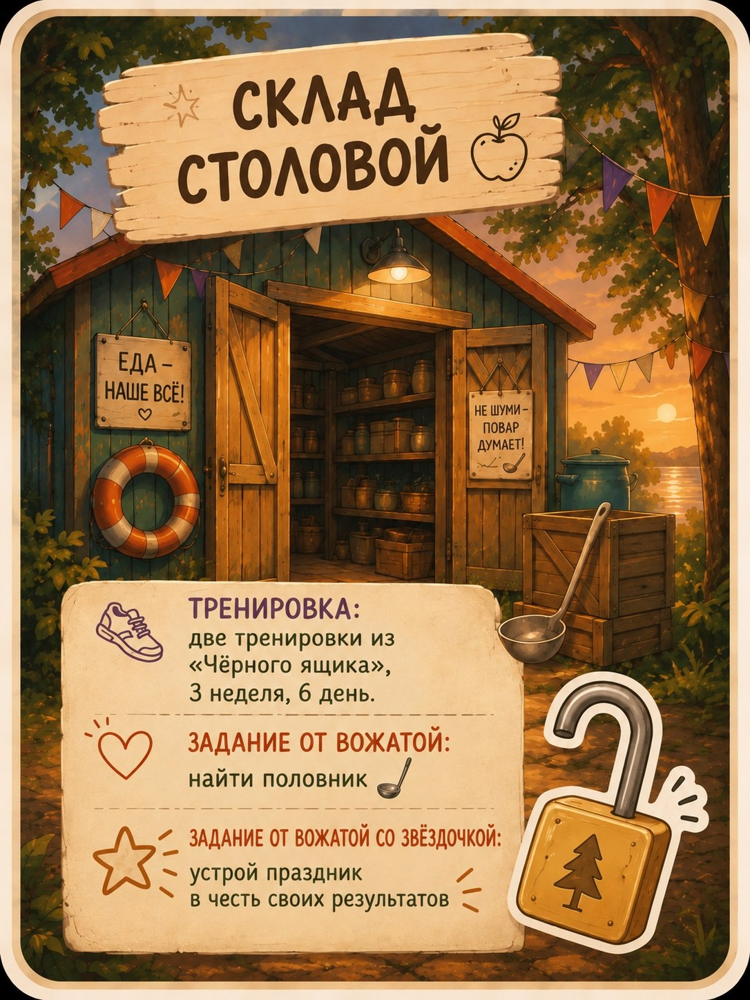
Не постановочные кадры, а то самое живое «смотрите, что сейчас покажу».
Открытки, валентинки и маяки, которые продолжали зажигаться в самых неожиданных местах.
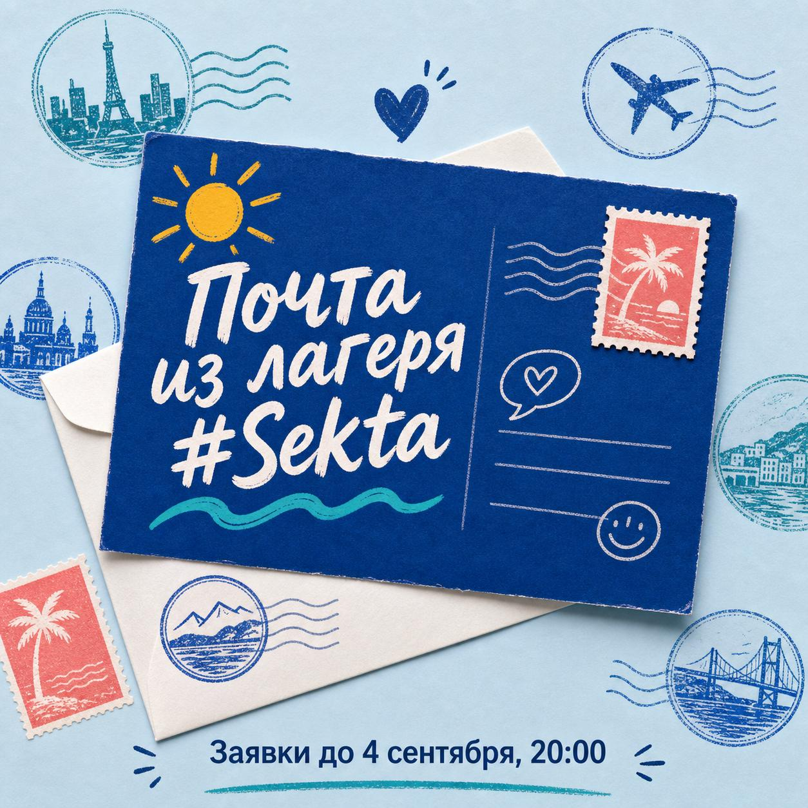
Письмо, которое уже хочется сохранить.
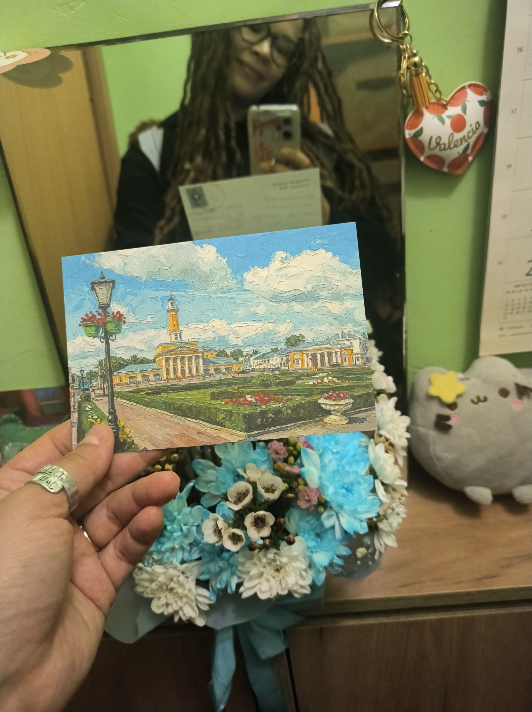
От тайного отправителя — с настоящим теплом.
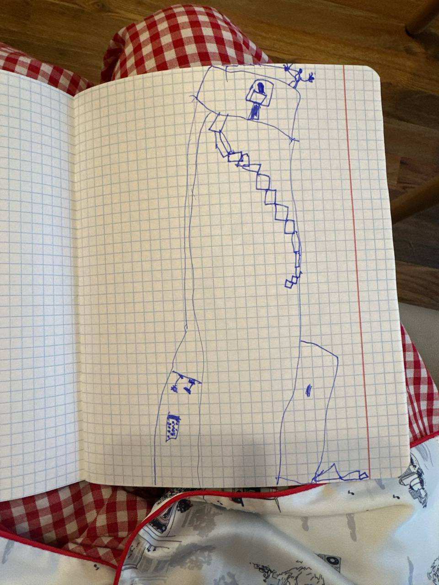
Когда маяк становится семейной реликвией.
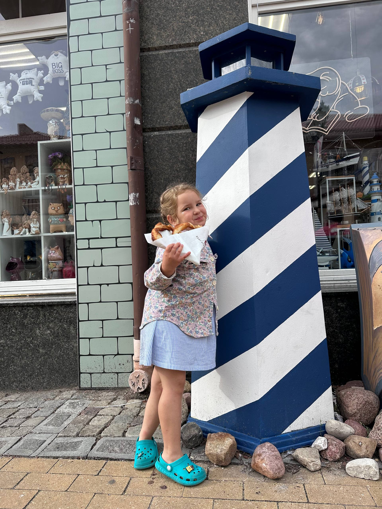
Ещё один маяк. Потому что света много не бывает.
Награды за то, чего не измерить шагами и повторами: за тепло, смех, поддержку, творчество и свет.
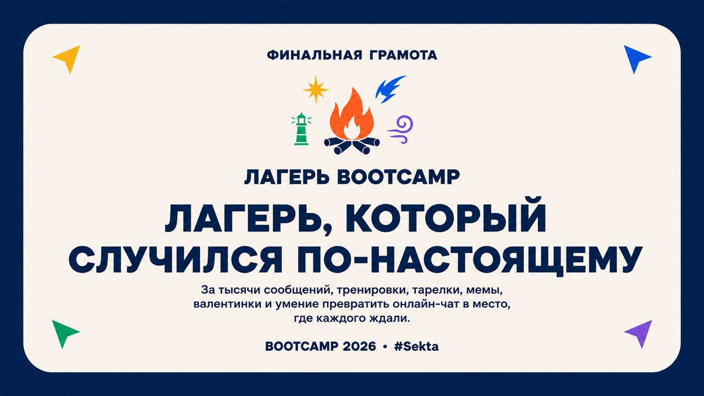
За тысячи сообщений, тренировки, тарелки, мемы, валентинки и умение превратить онлайн-чат в место, где каждого ждали.
Созвон, на котором было много красных галстуков, смеха, признаний и подозрительно блестящих глаз.
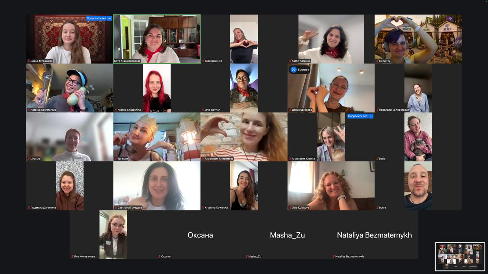
Спасибо каждому, кто писал, снимал, танцевал, поддерживал, включался с коврика и делал эту смену живой. Мы не прощаемся. Мы просто выходим из чата — ненадолго.
Маски, поздние ужины, внезапное искусство и тот самый кадр, который отправляешь со словами: «вы только посмотрите».